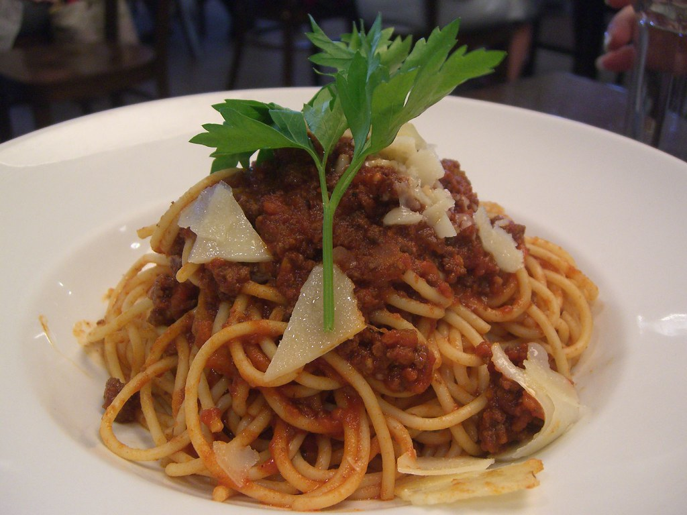

Spaghetti Bolognese

Description
A classic Italian dish featuring hearty meat sauce served over a bed of perfectly cooked spaghetti.
Ingredients
- 1 pound ground beef
- 1 onion, finely chopped
- 2 cloves garlic, minced
- 1 carrot, grated
- 1 celery stalk, finely chopped
- 1 can (28 oz) crushed tomatoes
- 1/2 cup red wine
- 2 tablespoons tomato paste
- 1 teaspoon dried oregano
- 1 teaspoon dried basil
- Salt and pepper to taste
- 1/4 cup fresh parsley, chopped (for garnish)
Steps
- In a large skillet, cook ground beef over medium heat until browned. Drain excess fat.
- Add chopped onion, minced garlic, grated carrot, and chopped celery. Cook until vegetables are softened.
- Stir in crushed tomatoes, red wine, tomato paste, oregano, basil, salt, and pepper. Simmer for 30 minutes.
- Serve over cooked spaghetti, garnished with fresh parsley.